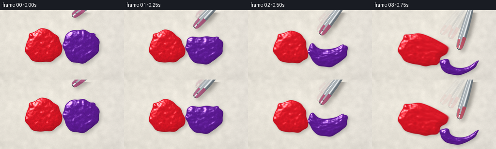
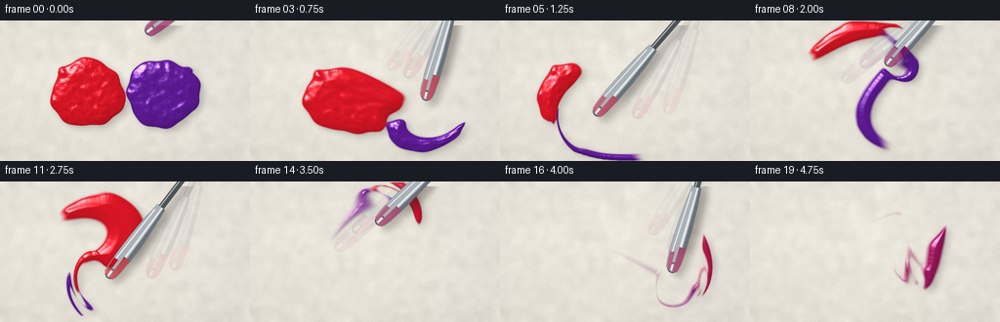
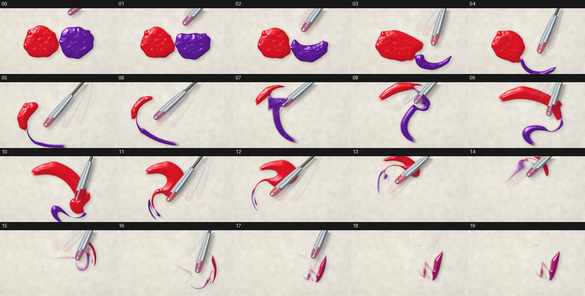

CODING AGENTS AS PIXEL WORLD MODELS
traex/DeepSeek-V4.1-Flash · material_0003
点击播放 · 原生 RGB 像素
逐轮保存的候选
回放视频、检查图与代码变化。
每份候选均可单独播放。实际图片检查记录在下方工具轨迹中。
候选 01播放与检查图
点击播放 · 原生 RGB 像素


展开代码变化
--- 上一保存版本
+++ 本次保存版本
@@ -0,0 +1,431 @@
+from pathlib import Path
+
+import numpy as np
+from PIL import Image, ImageDraw, ImageFilter
+from scipy.ndimage import distance_transform_edt, gaussian_filter, map_coordinates, shift
+
+import artifact_io
+
+
+ROOT = Path(__file__).resolve().parent
+OUT_W, OUT_H = 256, 144
+SS = 2
+W, H = OUT_W * SS, OUT_H * SS
+N_FRAMES = 20
+FPS = 4.0
+DT = 1.0 / (FPS * 8)
+
+RED = np.array([0.86, 0.085, 0.145], dtype=np.float32)
+PURPLE = np.array([0.37, 0.105, 0.59], dtype=np.float32)
+CREAM = np.array([0.905, 0.887, 0.846], dtype=np.float32)
+
+
+def smoothstep(edge0, edge1, value):
+ x = np.clip((value - edge0) / (edge1 - edge0), 0.0, 1.0)
+ return x * x * (3.0 - 2.0 * x)
+
+
+def normalize01(field):
+ lo, hi = np.percentile(field, [1.0, 99.0])
+ return np.clip((field - lo) / max(hi - lo, 1e-6), 0.0, 1.0)
+
+
+def blob(cx, cy, radius, phase, xx, yy):
+ dx = xx - cx
+ dy = (yy - cy) * 1.08
+ angle = np.arctan2(dy, dx)
+ rr = np.hypot(dx, dy)
+ edge = radius * (
+ 1.0
+ + 0.047 * np.sin(3.0 * angle + phase)
+ + 0.026 * np.sin(7.0 * angle - 0.7 * phase)
+ + 0.013 * np.cos(11.0 * angle + 1.3 * phase)
+ )
+ return smoothstep(edge + 1.4, edge - 1.4, rr)
+
+
+def initial_fields():
+ yy, xx = np.mgrid[0:H, 0:W].astype(np.float32)
+ red = blob(179.0, 149.0, 75.0, 0.35, xx, yy)
+ purple = blob(333.0, 149.0, 75.0, 2.20, xx, yy)
+
+ # Two equal satellite dollops keep the measured amounts visibly balanced.
+ red += 0.72 * blob(130.0, 105.0, 12.0, 1.10, xx, yy)
+ purple += 0.72 * blob(382.0, 105.0, 12.0, 2.80, xx, yy)
+ red = np.clip(red, 0.0, 1.0)
+ purple = np.clip(purple, 0.0, 1.0)
+
+ rng = np.random.default_rng(19)
+ pigment = normalize01(gaussian_filter(rng.normal(size=(H, W)), 1.25))
+ swirl = normalize01(gaussian_filter(rng.normal(size=(H, W)), 4.2))
+ micro = normalize01(gaussian_filter(rng.normal(size=(H, W)), 0.85))
+ trail = np.zeros((H, W), dtype=np.float32)
+ return red, purple, pigment, swirl, micro, trail
+
+
+def make_background():
+ rng = np.random.default_rng(7)
+ yy, xx = np.mgrid[0:H, 0:W].astype(np.float32)
+ broad = gaussian_filter(rng.normal(size=(H, W)), 6.5)
+ fine = gaussian_filter(rng.normal(size=(H, W)), 0.7)
+ broad = broad / max(np.std(broad), 1e-6)
+ fine = fine / max(np.std(fine), 1e-6)
+
+ shade = 1.0 + 0.011 * broad + 0.006 * fine
+ shade += 0.020 * (1.0 - yy / H) + 0.009 * (1.0 - xx / W)
+ radial = np.hypot((xx - W * 0.48) / W, (yy - H * 0.48) / H)
+ shade *= 1.0 - 0.075 * np.clip(radial, 0.0, 1.0) ** 1.7
+ bg = CREAM[None, None, :] * shade[..., None]
+
+ # A faint cool reflection makes the ceramic surface feel lit rather than flat.
+ cool = np.clip((xx - W * 0.62) / (W * 0.45), 0.0, 1.0)
+ bg[..., 2] += 0.010 * cool
+ return np.clip(bg, 0.0, 1.0)
+
+
+def tool_tip(t):
+ if t < 0.09:
+ u = smoothstep(0.0, 0.09, t)
+ return np.array([300.0 - 14.0 * u, 26.0 + 74.0 * u], dtype=np.float32)
+
+ if t < 0.88:
+ s = (t - 0.09) / 0.79
+ angle = -1.22 + 2.0 * np.pi * 2.40 * s
+ x = 256.0 + 96.0 * np.cos(angle) + 14.0 * np.sin(2.0 * angle + 0.35)
+ y = 150.0 + 56.0 * np.sin(angle) + 8.0 * np.cos(2.0 * angle - 0.25)
+ return np.array([x, y], dtype=np.float32)
+
+ start = np.array([345.0, 135.0], dtype=np.float32)
+ end = np.array([340.0, -95.0], dtype=np.float32)
+ u = smoothstep(0.88, 0.985, t)
+ return start * (1.0 - u) + end * u
+
+
+def tool_velocity(t):
+ e = 0.004
+ return (tool_tip(min(t + e, 1.0)) - tool_tip(max(t - e, 0.0))) / (
+ min(t + e, 1.0) - max(t - e, 0.0)
+ )
+
+
+def stir_envelope(t):
+ rise = smoothstep(0.005, 0.08, t)
+ fall = 1.0 - smoothstep(0.85, 0.94, t)
+ return rise * fall
+
+
+def velocity_field(t):
+ yy, xx = np.mgrid[0:H, 0:W].astype(np.float32)
+ tip = tool_tip(t)
+ vx_tip, vy_tip = tool_velocity(t)
+ speed = float(np.hypot(vx_tip, vy_tip))
+ envelope = stir_envelope(t)
+
+ dx = xx - tip[0]
+ dy = yy - tip[1]
+ r2 = dx * dx + dy * dy
+ influence = np.exp(-r2 / (2.0 * 58.0**2)).astype(np.float32)
+ broad = np.exp(-r2 / (2.0 * 112.0**2)).astype(np.float32)
+ safe_r = np.sqrt(r2) + 2.0
+
+ # The moving blade both drags and rolls the paint around its tip.
+ vx = vx_tip * (0.34 * influence + 0.12 * broad)
+ vy = vy_tip * (0.34 * influence + 0.12 * broad)
+ spin = 0.19 * speed * influence
+ vx += -dy / safe_r * spin
+ vy += dx / safe_r * spin
+
+ # A slow global circulation keeps the two dollops folding into each other.
+ cdx = xx - W * 0.50
+ cdy = yy - H * 0.50
+ cr = np.hypot(cdx, cdy) + 8.0
+ vx += -cdy / cr * 20.0 * envelope
+ vy += cdx / cr * 20.0 * envelope
+ return vx * envelope, vy * envelope
+
+
+def advect(field, vx, vy):
+ yy, xx = np.mgrid[0:H, 0:W].astype(np.float32)
+ sx = xx - vx * DT
+ sy = yy - vy * DT
+ return map_coordinates(field, [sy, sx], order=1, mode="constant", cval=0.0, prefilter=False)
+
+
+def add_trail_stroke(trail, p0, p1, strength):
+ if strength < 0.03:
+ return
+ pad = 26
+ x0 = max(0, int(min(p0[0], p1[0])) - pad)
+ x1 = min(W, int(max(p0[0], p1[0])) + pad + 1)
+ y0 = max(0, int(min(p0[1], p1[1])) - pad)
+ y1 = min(H, int(max(p0[1], p1[1])) + pad + 1)
+ if x0 >= x1 or y0 >= y1:
+ return
+
+ yy, xx = np.mgrid[y0:y1, x0:x1].astype(np.float32)
+ seg = p1 - p0
+ seg_len2 = float(np.dot(seg, seg)) + 1e-6
+ proj = ((xx - p0[0]) * seg[0] + (yy - p0[1]) * seg[1]) / seg_len2
+ proj = np.clip(proj, 0.0, 1.0)
+ qx = p0[0] + proj * seg[0]
+ qy = p0[1] + proj * seg[1]
+ dist = np.hypot(xx - qx, yy - qy)
+ groove = np.exp(-(dist / 7.0) ** 2)
+ ridge = np.exp(-((dist - 12.5) / 3.2) ** 2)
+ trail[y0:y1, x0:x1] += strength * (0.065 * ridge - 0.038 * groove)
+
+
+def simulate(red, purple, pigment, swirl, micro, trail, t0, t1):
+ for step in range(8):
+ a = t0 + (t1 - t0) * step / 8.0
+ b = t0 + (t1 - t0) * (step + 1) / 8.0
+ mid = 0.5 * (a + b)
+ vx, vy = velocity_field(mid)
+
+ red = advect(red, vx, vy)
+ purple = advect(purple, vx, vy)
+ pigment = advect(pigment, vx, vy)
+ swirl = advect(swirl, vx, vy)
+ micro = advect(micro, vx, vy)
+ trail = advect(trail, vx, vy)
+
+ red = gaussian_filter(red, 0.34, mode="constant")
+ purple = gaussian_filter(purple, 0.34, mode="constant")
+ pigment = gaussian_filter(pigment, 0.22, mode="constant")
+ swirl = gaussian_filter(swirl, 0.27, mode="constant")
+ micro = gaussian_filter(micro, 0.13, mode="constant")
+ trail = gaussian_filter(trail, 0.22, mode="constant")
+
+ trail *= 0.986
+ add_trail_stroke(trail, tool_tip(a), tool_tip(b), stir_envelope(mid))
+ trail = np.clip(trail, -0.34, 0.28)
+
+ return red, purple, pigment, swirl, micro, trail
+
+
+def paint_color(red, purple, pigment, t):
+ total = red + purple + 1e-5
+ w_red = red / total
+ w_purple = purple / total
+
+ blend = smoothstep(0.64, 0.98, t)
+ w_red = (1.0 - blend) * w_red + blend * 0.5
+ w_purple = (1.0 - blend) * w_purple + blend * 0.5
+ color = w_red[..., None] * RED[None, None, :] + w_purple[..., None] * PURPLE[None, None, :]
+
+ variation = 0.94 + 0.10 * (pigment[..., None] - 0.5)
+ color *= variation
+ return np.clip(color, 0.0, 1.0)
+
+
+def shade_paint(color, red, purple, pigment, swirl, micro, trail, t):
+ total = red + purple
+ alpha = smoothstep(0.09, 0.68, total)
+
+ solid = alpha > 0.43
+ dist = distance_transform_edt(solid).astype(np.float32)
+ mound = np.sqrt(np.clip(dist / 24.0, 0.0, 1.0))
+ height = alpha * (0.16 + 0.46 * mound)
+ height += 0.055 * (4.0 * alpha * (1.0 - alpha))
+ height += alpha * (swirl - 0.5) * 0.12
+ height += alpha * (micro - 0.5) * 0.018
+ height += trail * 0.62
+ height = gaussian_filter(height, 1.05)
+
+ gy, gx = np.gradient(height)
+ nx = -gx * 24.0
+ ny = -gy * 24.0
+ nz = np.ones_like(nx)
+ norm = np.sqrt(nx * nx + ny * ny + nz * nz)
+ nx /= norm
+ ny /= norm
+ nz /= norm
+
+ lx, ly, lz = -0.48, -0.67, 0.74
+ lnorm = np.sqrt(lx * lx + ly * ly + lz * lz)
+ lx, ly, lz = lx / lnorm, ly / lnorm, lz / lnorm
+ diffuse = np.clip(nx * lx + ny * ly + nz * lz, 0.0, 1.0)
+
+ hx, hy, hz = lx, ly, lz + 1.0
+ hnorm = np.sqrt(hx * hx + hy * hy + hz * hz)
+ hx, hy, hz = hx / hnorm, hy / hnorm, hz / hnorm
+ spec_angle = np.clip(nx * hx + ny * hy + nz * hz, 0.0, 1.0)
+ specular = spec_angle**58
+
+ shade = (0.79 + 0.31 * diffuse + 0.035 * mound)[..., None]
+ shaded = color * shade
+ shaded += specular[..., None] * np.array([1.0, 0.975, 0.94], dtype=np.float32) * 0.78
+
+ # A cool glancing reflection along raised edges keeps the paint glossy.
+ glance = np.clip(1.0 - nz, 0.0, 1.0) ** 2
+ shaded += glance[..., None] * np.array([0.24, 0.27, 0.31], dtype=np.float32) * 0.15
+
+ edge = np.clip(4.0 * alpha * (1.0 - alpha), 0.0, 1.0)
+ shaded += edge[..., None] * np.array([0.10, 0.055, 0.065], dtype=np.float32)
+ return np.clip(shaded, 0.0, 1.0), alpha, height
+
+
+def draw_tool_layer(tip, opacity, paint_rgb):
+ scale = 2
+ tw, th = W * scale, H * scale
+ layer = Image.new("RGBA", (tw, th), (0, 0, 0, 0))
+ draw = ImageDraw.Draw(layer, "RGBA")
+
+ pivot = np.array([430.0, -78.0], dtype=np.float32)
+ back = pivot - tip
+ back /= np.hypot(back[0], back[1]) + 1e-6
+ normal = np.array([-back[1], back[0]], dtype=np.float32)
+
+ def pt(s, side):
+ p = tip + back * s + normal * side
+ return (p[0] * scale, p[1] * scale)
+
+ def width(s):
+ return float(np.interp(s, [0, 8, 30, 85, 145, 180], [10.5, 13.0, 16.0, 16.8, 13.5, 10.0]))
+
+ a = int(255 * opacity)
+ outline = (46, 52, 57, int(235 * opacity))
+ steel_dark = (104, 114, 121, a)
+ steel_mid = (170, 178, 183, a)
+ steel_light = (229, 233, 235, a)
+
+ # Wooden grip and metal shank sit mostly beyond the upper-right corner.
+ grip0 = tip + back * 300.0
+ grip1 = tip + back * 470.0
+ grip_n = normal * 13.0
+ grip_poly = [
+ ((grip0 + grip_n)[0] * scale, (grip0 + grip_n)[1] * scale),
+ ((grip1 + grip_n)[0] * scale, (grip1 + grip_n)[1] * scale),
+ ((grip1 - grip_n)[0] * scale, (grip1 - grip_n)[1] * scale),
+ ((grip0 - grip_n)[0] * scale, (grip0 - grip_n)[1] * scale),
+ ]
+ draw.polygon(grip_poly, fill=(72, 48, 35, a), outline=(34, 24, 20, int(220 * opacity)))
+ shank = [pt(174, 6.0), pt(330, 6.0), pt(330, -6.0), pt(174, -6.0)]
+ draw.polygon(shank, fill=(75, 81, 86, a), outline=outline)
+ draw.line([pt(180, -2.5), pt(315, -2.5)], fill=(160, 166, 170, int(160 * opacity)), width=2 * scale)
+
+ left = [pt(s, width(s)) for s in (7, 22, 55, 100, 145, 181)]
+ right = [pt(s, -width(s)) for s in (181, 145, 100, 55, 22, 7)]
+ blade = left + right
+ draw.polygon(blade, fill=steel_mid, outline=outline)
+
+ left_shadow = [pt(s, width(s)) for s in (7, 24, 62, 108, 155, 181)]
+ left_shadow += [pt(s, width(s) * 0.52) for s in (181, 155, 108, 62, 24, 7)]
+ draw.polygon(left_shadow, fill=steel_dark)
+
+ highlight = [pt(s, width(s) * 0.34) for s in (8, 35, 92, 150, 181)]
+ highlight += [pt(s, width(s) * 0.10) for s in (181, 150, 92, 35, 8)]
+ draw.polygon(highlight, fill=steel_light)
+ draw.line([pt(13, -width(13) * 0.74), pt(170, -width(170) * 0.68)], fill=(246, 248, 248, a), width=2 * scale)
+
+ # A rounded palette-knife tip and a little wet paint residue sell contact.
+ cap = tip + back * 9.0
+ draw.ellipse(
+ [
+ (cap[0] - 10.5) * scale,
+ (cap[1] - 10.5) * scale,
+ (cap[0] + 10.5) * scale,
+ (cap[1] + 10.5) * scale,
+ ],
+ fill=steel_mid,
+ outline=outline,
+ width=2 * scale,
+ )
+ draw.ellipse(
+ [
+ (cap[0] - 6.0) * scale,
+ (cap[1] - 6.0) * scale,
+ (cap[0] + 6.0) * scale,
+ (cap[1] + 6.0) * scale,
+ ],
+ fill=steel_light,
+ )
+
+ smear = tuple(int(v) for v in paint_rgb) + (int(155 * opacity),)
+ smear_left = [pt(s, width(s) * 0.96) for s in (2, 12, 25, 40, 54)]
+ smear_left += [pt(s, width(s) * 0.10) for s in (54, 38, 20, 2)]
+ draw.polygon(smear_left, fill=smear)
+ smear_right = [pt(s, -width(s) * 0.30) for s in (3, 15, 28, 41)]
+ smear_right += [pt(s, -width(s) * 0.88) for s in (40, 25, 12, 3)]
+ draw.polygon(smear_right, fill=smear)
+
+ return layer
+
+
+def composite_tool(rgb, t, paint_rgb):
+ tip = tool_tip(t)
+ if tip[1] < -35.0:
+ return rgb
+
+ opacity = 1.0 - smoothstep(0.90, 0.985, t)
+ if opacity <= 0.01:
+ return rgb
+
+ current = draw_tool_layer(tip, opacity, paint_rgb).resize((W, H), Image.Resampling.LANCZOS)
+ mask = current.getchannel("A")
+
+ shadow = Image.new("RGBA", current.size, (30, 24, 20, 0))
+ shadow.putalpha(mask.filter(ImageFilter.GaussianBlur(7.0)).point(lambda p: int(p * 0.34)))
+ shadow = shift(np.asarray(shadow), (10, 13, 0), order=1, mode="constant", cval=0.0)
+
+ full = Image.fromarray(np.clip(rgb * 255.0, 0, 255).astype(np.uint8), "RGB").convert("RGBA")
+ full.alpha_composite(Image.fromarray(shadow.astype(np.uint8), "RGBA"))
+
+ for lag, ghost_alpha in ((0.072, 0.10), (0.038, 0.16)):
+ ghost = draw_tool_layer(
+ tool_tip(max(0.0, t - lag)), opacity * ghost_alpha, paint_rgb
+ ).resize((W, H), Image.Resampling.LANCZOS)
+ full.alpha_composite(ghost)
+
+ full.alpha_composite(current)
+ out = np.asarray(full.convert("RGB").resize((W, H), Image.Resampling.LANCZOS), dtype=np.float32) / 255.0
+ return out
+
+
+def render_frame(red, purple, pigment, swirl, micro, trail, t, bg):
+ color = paint_color(red, purple, pigment, t)
+ paint, alpha, height = shade_paint(color, red, purple, pigment, swirl, micro, trail, t)
+
+ soft = gaussian_filter(alpha, 6.5)
+ offset_shadow = shift(soft, (6.0, 8.0), order=1, mode="nearest")
+ contact = gaussian_filter(alpha, 2.2) - alpha
+ background = bg * (1.0 - 0.18 * offset_shadow[..., None])
+ background *= 1.0 - 0.15 * np.clip(contact, 0.0, 1.0)[..., None]
+
+ out = background * (1.0 - alpha[..., None]) + paint * alpha[..., None]
+
+ # Fine pigment tooth, kept below the level of visible pixel noise.
+ tooth = (micro - 0.5) * 0.022
+ out += tooth[..., None] * alpha[..., None]
+ out = np.clip(out, 0.0, 1.0)
+
+ paint_rgb = np.clip(np.average(color, weights=alpha + 1e-5, axis=(0, 1)) * 255.0, 0, 255)
+ out = composite_tool(out, t, paint_rgb)
+ out = np.clip(out, 0.0, 1.0)
+
+ frame = Image.fromarray((out * 255.0 + 0.5).astype(np.uint8), "RGB")
+ frame = frame.resize((OUT_W, OUT_H), Image.Resampling.LANCZOS)
+ return np.asarray(frame, dtype=np.uint8)
+
+
+def main():
+ bg = make_background()
+ red, purple, pigment, swirl, micro, trail = initial_fields()
+ frames = []
+
+ for index in range(N_FRAMES):
+ t = index / (N_FRAMES - 1)
+ if index > 0:
+ prev_t = (index - 1) / (N_FRAMES - 1)
+ red, purple, pigment, swirl, micro, trail = simulate(
+ red, purple, pigment, swirl, micro, trail, prev_t, t
+ )
+ frames.append(render_frame(red, purple, pigment, swirl, micro, trail, t, bg))
+ print(f"rendered frame {index + 1:02d}/{N_FRAMES}", flush=True)
+
+ frames = np.stack(frames).astype(np.uint8)
+ artifact_io.save(frames, ROOT)
+
+
+if __name__ == "__main__":
+ main()
可观测工具轨迹
实际执行的命令与返回图片。
命令 1exit 0
/bin/bash -c "pwd && rg --files -g 'prompt.txt' -g 'GENERATION_RULES.md' -g 'task_spec.json' -g '"'!**/.git/**'"'"
命令 2exit 0
/bin/bash -c 'ls -la'
命令 3exit 0
/bin/bash -c 'cat prompt.txt'
命令 4exit 0
/bin/bash -c 'cat GENERATION_RULES.md'
命令 5exit 0
/bin/bash -c 'cat task_spec.json'
命令 6exit 0
/bin/bash -c "sed -n '1,260p' artifact_io.py"
命令 7exit 0
/bin/bash -c "python - <<'PY'
import numpy, PIL
print('numpy', numpy.__version__)
print('PIL', PIL.__version__)
try:
import scipy
print('scipy', scipy.__version__)
except Exception as e:
print('no scipy', e)
PY"命令 8exit 0
/bin/bash -c "python - <<'PY' import importlib.util for m in ['cv2','imageio','matplotlib']: print(m, bool(importlib.util.find_spec(m))) PY"
命令 9exit 0
/bin/bash -c 'python generate.py'
命令 10exit 0
/bin/bash -c "python - <<'PY'
import imageio.v2 as iio
files=[f'frames/{i:02d}.png' for i in range(20)]
iio.mimsave('.tmp/preview.mp4',[iio.imread(f) for f in files],fps=4,codec='libx264',quality=8,macro_block_size=1)
print('wrote .tmp/preview.mp4')
PY"命令 11exit 0
/bin/bash -c "python - <<'PY'
from PIL import Image,ImageDraw
from pathlib import Path
fs=[Image.open(p).convert('RGB') for p in sorted(Path('frames').glob('*.png'))]
w,h=256,144
sheet=Image.new('RGB',(w*5,(h+18)*4),(24,24,24)); d=ImageDraw.Draw(sheet)
for i,im in enumerate(fs):
x=(i%5)*w; y=(i//5)*(h+18)
d.text((x+4,y+2),f'{i:02d}',fill='white')
sheet.paste(im,(x,y+18))
sheet.save('.tmp/all_frames.png')
PY"命令 12exit 0
/bin/bash -c "python - <<'PY' import generate for i in range(20): t=i/19 print(i, generate.tool_tip(t)) PY"
命令 13exit 0
/bin/bash -c "python - <<'PY'
from pathlib import Path
import json, numpy as np
from PIL import Image
spec=json.loads(Path('task_spec.json').read_text())
with np.load('pixels.npz') as z:
a=z['pixels']
print('pixels',a.shape,a.dtype)
print('frame pngs',len(list(Path('frames').glob('*.png'))))
print('artifacts',[(p.name,p.stat().st_size) for p in [Path('pixels.npz'),Path('index.html'),Path('inspection.png'),Path('transition_check.png')]])
for i in [0,4,9,14,19]:
im=np.asarray(Image.open(f'frames/{i:02d}.png').convert('RGB'),dtype=np.float32)
print(i,'mean RGB',np.round(im.mean((0,1)),1),'std',round(float(im.std()),1))
PY"命令 14exit 0
/bin/bash -c "python -m py_compile generate.py && echo 'generate.py compiles'"
命令 15exit 127
/bin/bash -c 'ffprobe -v error -show_entries format=duration,size -show_entries stream=codec_name,width,height,r_frame_rate,nb_frames,pix_fmt -of json .tmp/preview.mp4'
命令 16exit 0
/bin/bash -c "python - <<'PY'
import imageio.v2 as iio
r=iio.get_reader('.tmp/preview.mp4')
meta=r.get_meta_data(); print(meta)
print('frames',r.count_frames())
r.close()
PY"命令 17exit 0
/bin/bash -c 'cp .tmp/preview.mp4 rgb_video.mp4 && ls -lh rgb_video.mp4 generate.py pixels.npz inspection.png index.html'
视觉工具实际返回图片 1

视觉工具实际返回图片 2

视觉工具实际返回图片 3
视觉工具实际返回图片 4

保存候选 1 份；完成命令 17 次；可验证图片返回 4 张。原始 API 响应与完整日志保留在本地。